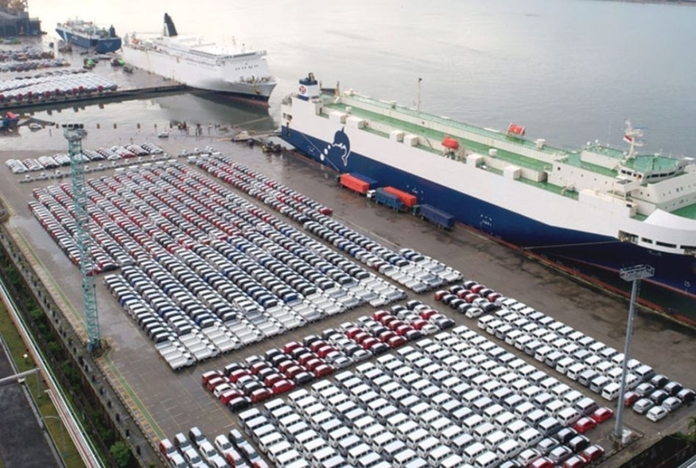
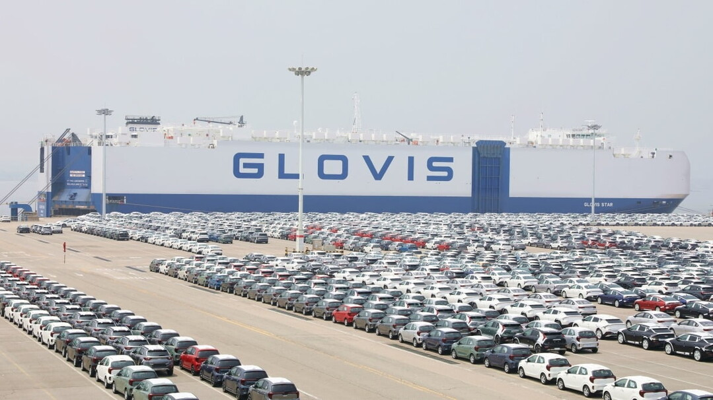
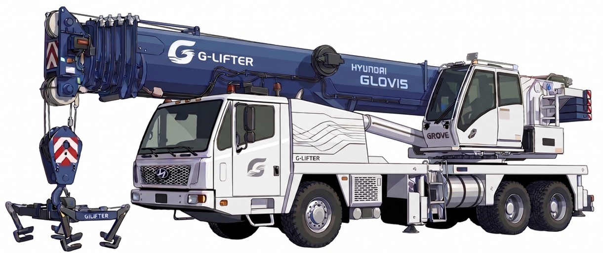
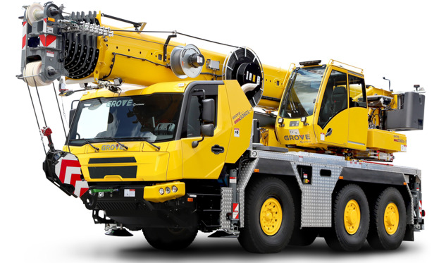

수직하역 크레인 G-Lifter 운영 최적화 및 셔플링 핫스팟 예측 솔루션으로
현대글로비스 자동차 터미널의 하역지연을 방지하고 차량 회전율을 극대화합니다.
필라델피아(Southport) 등 글로벌 완성차 항만 야적장 및 중앙 통제실
현대글로비스 RORO 터미널 관리자 및 차량 출고 스케줄러
Excel 하역 데이터를 기반으로 차량 재배치 다빈도 발생 구역 결정 및 G-Lifter 최적 배치
컨테이너와 달리 평면 주차만 가능하여 공간 효율 및 이동 동선 제약 극대화
나중에 들어온 차가 출구를 막는
후입선출(LIFO) 구조

한정된 야드 내 다양한 화주(OEM) 및 브랜드 물량 뒤섞여 출고 우선순위 관리 극도로 복잡
액세서리 장착 및 검수 등 공정이 항만 내 차량 평균 체류 시간 가중, 하역 회전율 급락
⚠️ 자동차 물류는 야적 공간과 순차적 출고가 생명이기에, 일반 컨테이너보다 하역 작업 및 체선 리스크 관리가 훨씬 복잡하고 중요함
But, 구조적 제약으로 인해 차량 출고를 위한 "차량 재배치" 발생
타겟 차량 위치가 중심부일수록 방해 차량 이적 수 증가
➔ 셔플링 비용 증가
현재 위치 ➔ 대상 차량
시동 ➔ 임시 위치 운전 ➔ 주차
임시 위치 ➔ 기존 작업 위치
작업 총계 : 약 10분
막힌 차 2대 이동 ➔ 타겟 추출 ➔ 원위치
*3번째 열 차량의 출고 요청이 들어왔을 때 그 중 30%만 실제 셔플링 발생 가정
| 차량의 야드 점유율 |
출고 요청 | 셔플링 발생 횟수 |
총 손실 시간 |
비용 환산 |
|---|---|---|---|---|
| 50% | 29회 | 9회 | 90분 | 524만원 |
| 70% | 43회 | 13회 | 130분 | 758만원 |
| 100% | 57회 | 17회 | 170분 | 991만원 |
선박 대기 비용 : 하루 $60,000 = 시간당 시간당 약 350만원
야드가 포화상태일 때 셔플링으로 인한
손실 시간: 170분, 비용: 991만원
필라델피아 southport의 배치 Block 1개 기준
야적장 점유율 85% 도달 시
터미널 생산성 급락
25~30% ↓
셔플링 횟수 기하급수적 상승
➔ 처리량 감소 & 작업 시간 지연
야적장은 100% 가득 차기 훨씬 이전부터
'셔플링' 으로 인해 마비 상태에 진입

현대글로비스 필라델피아 항만
단순 차 옮기기에 소모되는 인력 비율
30~40%
숙련된 하역 노동자들이 새로운 차를 내리는 대신,
안쪽 차량 추출에 매몰
S&D (파손) 리스크
셔플링의 누적
= 신차 품질 저하 요인으로 작용
" 결론적으로 하역 지연 개선의 핵심은 '셔플링 문제 해결' 에 있습니다 "
수동 하역의 한계를 넘는 수직 인양 솔루션
: 앞차 이동 없는 'Direct Pick-up'
: 야적 점유율 90% 이상의 극한 상황에서도 일관된 출고 속도 유지


| 장비 전폭 | 2.55m |
|---|---|
| 최대 리치 | 메인 붐 48m |
| 인양 능력 | 24m지점에서 3.5t ~ 4.2t |
| 수직 리프팅 | 최대 팁 높이 51m |
| 장비 전폭 | 2.5m 내외 | 도로 주행 및 통로 진입 가능 |
|---|---|---|
| 최대 리치 | 22 ~ 25m | 수평 작업 반경18m(3열15m+통로3m) 및 안전 인양 각도 확보 |
| 인양 능력 | 25.0m 리치에서 3.0t |
3열에서도 전기차/대형 SUV 인양 가능 |
| 수직 리프팅 | 7.0m 이상 확보 | 전면 차량 상공 통과 시 충돌 및 대물 파손 리스크 방지 |
진입 및 정차
: G-Lifter 차량이 Deep Lane 진입 통로에 정차하여 작업 반경 확보
붐 전개 및 도달
: 너클 붐이 전방 차량들을 가로질러 3열(중심부) 타겟 차량에 도달
무손상 결속
: 휠 리프팅 프레임을 통해 차체 접촉 없이 타이어 4지점 완전 고정
수직 인양 및 이송
: 타겟 차량을 수직으로 인양하여 통로로 즉시 이송
[ 기존 셔플링 차량 추출 방식 ]
예상 소요 시간
600초
최소 투입 인력
3명
[ G-Lifter 차량 추출 방식 ]
예상 소요 시간
180초
최소 투입 인력
2명
*타이어 밴드 결속/해체 과정 포함G-Lifter 도입으로 소요 시간과 투입 인력을 단축해 하역 효율성 개선
G-Lifter 전면 도입의 한계와 '선별적 투입'의 필요성
입력된 명세서와 현재 야드 점유율 데이터를 알고리즘으로 분석하여, 향후 출고 시 셔플링 발생 빈도가 높은 취약 구간(고위험 블록)을 히트맵 형태로 경고합니다.
전 구간이 아닌 셔플링 집중 위험 구역을 타겟팅하여, 시스템이 자동으로 G-Lifter의 최적 이동 위치를 산출하고 배치 권고 지시를 내립니다.
AS-IS 대비 TO-BE 정량적 / 정성적 개선 지표
셔플링 건당 약 47% 단축
연간 약 26억원 절감
연간 120,000대
처리비용 절감
연간 600시간
대응시간 감소
연간 선박 13척
체류 비용 절감 가능